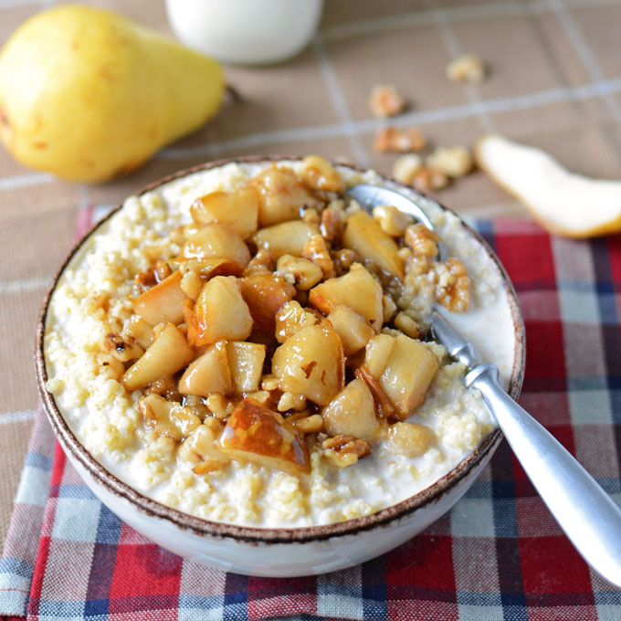

PEARS WITH BROWN SUGAR BOURBON AND MILLET

Need to warm your soul on a chilly winter morning? This cozy, hearty, and healthy breakfast will put you in the right frame of mind to seize the day.
Brown Sugar Bourbon Pears
3 Tbsp organic light brown sugar
2 pears cut into bite-sized pieces
Combine cooked millet*, 2% milk, vanilla, and salt in a small saucepan and slowly heat over low heat until it reaches scalding temperature, which is 180ºF. Basically, you'll be heating it until it's about to start simmering. If you see any signs of a simmer or a boil starting, immediately remove the pot from the heat. You can also heat the millet and milk in the microwave, on high, in a microwave safe bowl, in one minute increments until it's heated through.
While the cereal is heating, prepare the brown sugar bourbon pear topping. Place butter and brown sugar in a pan over medium heat. Cook while stirring frequently until it begins to bubble, and then add a splash of bourbon. Simmer the bourbon for one minute while continuously stirring in order to cook the alcohol off. Finally, add the pears and the walnuts to the pan and continue heating until it returns to a simmer, then remove from the heat.
Divide the hot millet between 2 bowls and serve topped with the brown sugar bourbon pears. Serve immediately.
*For this recipe I used millet that was precooked in a larger batch so that I could use it throughout the week. To precook millet place 1 C of millet into a saucepan over high heat, and toast the grain until it becomes aromatic. Then add 2 C of water to the saucepan, bring to a boil, and then reduce to a simmer. Simmer the millet covered for about 25 minutes or until all the water